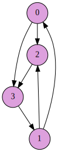

Implement a graph data structure that provides a few elementary algorithms.
I would like you all to collaborate on these projects in small teams. Teams must have 3 – 4 people. As usual:
You’ve seen enough examples by now that it is time for you to play more of a role in the design. The skeleton is almost empty this time around. There is a command line interface described in main.cpp which you are to implement, but almost all of the details are left to you. Regarding the interface, please read the comments in the skeleton, in particular, anywhere where it says ‘NOTE’. A high-level list of tasks:
You will also need to write the graph in dot format (graphviz). Moreover, the dot file should (depending on the context):
Refer to the appendix regarding the highlighting.
Each line of input will contain two integers, and represents an edge from the first to the second. For example, if a file contains
0 2
0 3
3 1
1 0
2 3
1 2then the graph would be:

NOTE: directed and undirected graphs will have the same format. See the --undir switch in main.cpp.
Please make sure that your program compiles with the makefile that I provided. For testing and debugging, you’re pretty much on your own, but to facilitate, I have provided a program that creates random graphs that usually have “interesting” strongly connected components (most random graph models produce graphs that have one very large SCC, or that have each node in its own SCC). Running make should build the randgraph program, which will output random graphs in an edge list representation (as above) which your program can read. (NOTE: It uses different procedures for generating directed vs undirected graphs, but either way, just outputs an edge list.) Run ./randgraph -h to see the help string.
You can use STL data structures, but don’t use any external libraries that trivialize the problem. An adjacency list is probably a good approach.
Don’t waste too much time on this aspect of the project, but if you want to tweak the way things look, a few resources:
Here are some examples of the coloring / highlighting. In case you don’t want to read the dot language specification, you can learn via example by reading the graphs in the doc/ directory, which correspond to those below.
Graph g1.dot, with strongly connected components highlighted.
Graph g3.dot, with a shortest path from 0–14 highlighted.
Graph g4.dot, showing “tree edges” for DFS.
Graph g5.dot, showing “tree edges” and start/finish times for DFS.